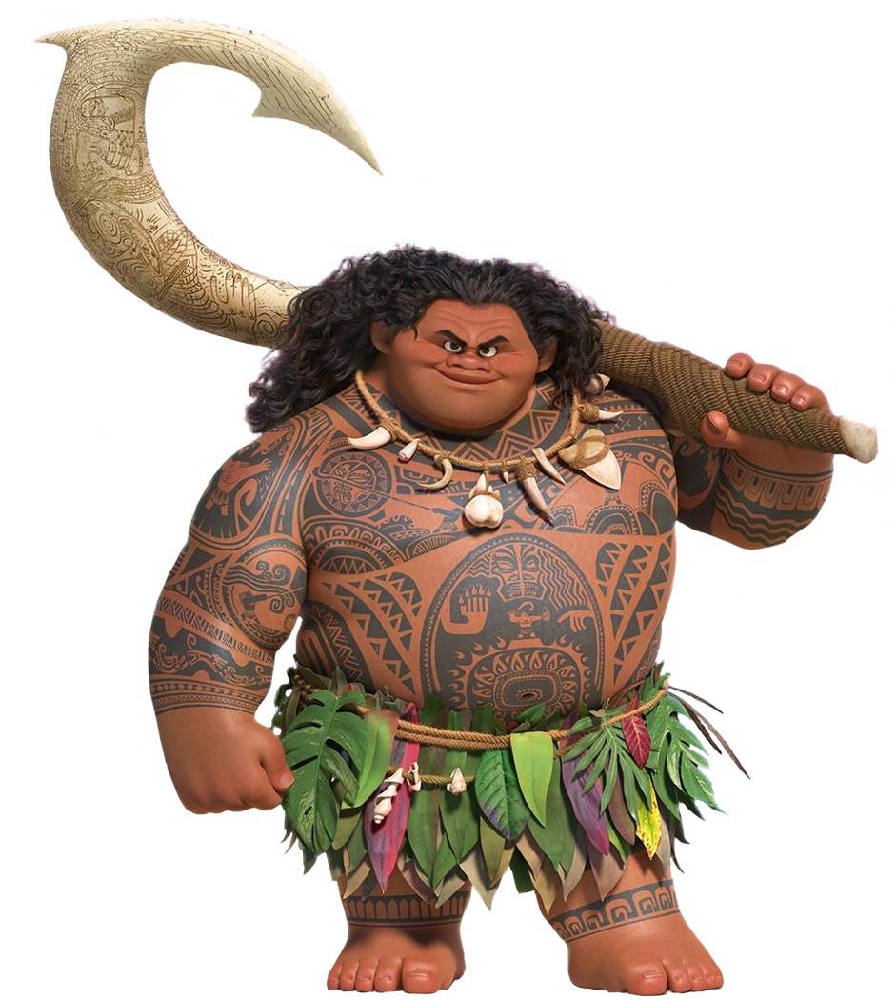
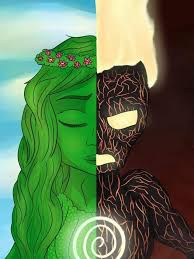

Moana tiene su origen en las culturas polinesias, inspirándose en las tradiciones, mitos y leyendas de pueblos como Samoa, Fiji, Tonga y Hawái. La película integra elementos de la navegación ancestral —una práctica esencial en la historia del Pacífico—, así como figuras míticas como el semidiós Maui. Aunque Moana no es un personaje real, su historia representa la conexión espiritual con el mar, el respeto por la naturaleza y la fuerza cultural de las comunidades isleñas, transmitiendo valores que han sido parte de la identidad polinesia durante siglos.
Maui

es un semidiós poderoso, carismático y un tanto arrogante , famoso por sus hazañas en favor de la humanidad, como detener el sol o levantar islas del mar. Aunque comienza actuando desde el orgullo, su historia revela un pasado marcado por el deseo de ser aceptado. Su arma principal es su anzuelo mágico, que le permite transformarse en diferentes animales. A pesar de su actitud presumida, Maui muestra un gran corazón y termina convirtiéndose en un aliado esencial para Moana, aprendiendo junto a ella el verdadero significado del heroísmo.
Te Fiti / Te Kā

Fiti es la diosa creadora de vida, símbolo de fertilidad, paz y equilibrio, cuya energía permite que las islas prosperen. Cuando su corazón es robado por Maui, se transforma en Te Kā, una entidad volcánica llena de ira y destrucción. Esta dualidad representa la importancia de la armonía con la naturaleza y cómo el desequilibrio puede generar caos. Su historia expresa la idea de que incluso las fuerzas aparentemente destructivas esconden un origen herido que necesita ser restaurado.
Servicios
sEn nuestra página web ofrecemos un servicio dedicado a brindar información clara y actualizada sobre películas de todos los géneros. Aquí encontrarás sinopsis, descripción de personajes y datos esenciales para conocer mejor tus historias favoritas. Nuestro objetivo es ofrecerte un espacio sencillo, rápido y confiable donde puedas descubrir y aprender más sobre el mundo del cine.